На все предметы вокруг нас всегда действуют самые разнообразные силы: сила притяжения, сила любви, сила внутреннего давления, сила воли, грубая сила… Например, всем известна сила тяжести, которая направлена вертикально вниз.
Утром в офисе попробуйте провести следующий эксперимент: Налейте себе чашку горячего кофе. Держите чашку на некторой высоте от пола и отпустите её. Под действием силы тяжести чашка упадёт вниз и забрызгает ваши туфли.
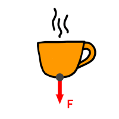
Стрелочкой F на рисунке показана сила тяжести.
Но что произойдёт, если вы поставите чашку на стол. Логично, что после этого никто никуда не будет падать. (Локти и пугающие вас из-за спины коллеги относятся к необъяснимым физическим явлениям и в теории не учитываются.)
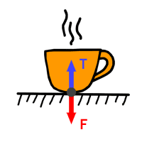
Сила тяжести в виде стрелочки F по прежнему тянет чашку вниз, но стол всячески этому сопротивляется в виде стрелочки T.
Такое сопротивление стола, умудрёные знаниями физики женщины, называют реакцией опоры.
Note! Теперь вы знаете умный физический термин — реакция опоры. Используйте его в обиходной речи для повышения уважения окружающих. И вполне возможно, вас сочтут за умудрёную знаниями физики женщину.
Как вы видите на рисунке, обе стрелки равны по длинне и противоположны по направлениям. Такое равенство, на самом деле, свойство любой реакции опоры. Попробуйте повиснуть на шее у вашей единственной и ненаглядной любви и опоры — его реакция будет в точности равнятся приложенной вами силе.
Закон равновесия сил
Когда противоположные силы, действующие на предмет, равны — то предмет никуда не движется. Или, как говорят умудрёные женщины, тело находится в равновесии.
Если же стол не сможет выдержать тяжести чашки, или же ваша любовь не выдержит ваше черезмерное давление — то конструкция выйдет из равновесия и чашка начнёт двигаться вниз, прогибая стол (не говоря уже о мужчине).
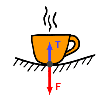
Чашка движется вниз, если F длиннее T.
Существующие вокруг нас силы намного сложнее и разнообразнее. Возьмём для следующего примера мужчину, которого тянет на лево неведомая сила точно так же, как все предметы тянет вниз сила тяжести.
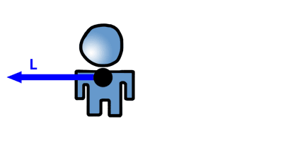
Как вы уже знаете, в таком состоянии мужчина будет двигаться в направлении приложенной силы. Поэтому для равновесия необходима любимая женщина, удерживающая мущину при себе с эквивалентной силой в противоположную сторону.
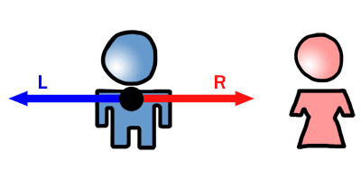
Теперь мужчина находится неподвижно на своём законном месте.
Но что делать, если у женщины пмс, насморк, сломался ноготь, кончился любимый шампунь и приложенная ею сила R намного меньше силы L? Для восстановления равновесия нам потребуется сытный ужин, тянущий мужчину в сторону его женщины. (Ах, макароны с сыром! Приятные воспоминания греют мою душу. Пожалуй я назову это силу M в честь макарон.)
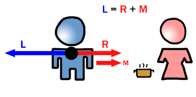
Сила R и сила M в сумме равны силе L. Мужик снова на своём месте.
Усложним задачу и внесём кружку пива, которая тянет мужика не только горизонтально влево от любимой, но и вниз к бренному алкоголическому существованию.
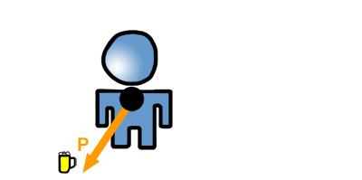
Чтобы определить насколько именно кружка пива тянет мужика налево и насколько к бренному существованию, умудрёные женщины применяют специальную операцию, называемую разложением на векторы.
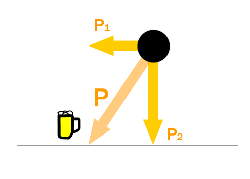
Серые линии на рисунке всегда строго вертикальны (в нашем случае это бреннность сущестования) или горизонтальны (право-лево).
Силы P1 и P2 и есть те самые силы кружки пива тянущие мужика по заданным направлениям и в сумме равняются силе P.
Note! Если вы не знали ранее о возможности разложения на векторы — теперь же можете вздохнуть спокойно. Для практики и закрепления знаний попробуйте разложить на векторы всяческие диагональные силы вокруг вас.
Если силу P1 пивной кружки жещина может компенсировать увеличив сытность ужина, то на мужика по прежнему будет действовать та часть силы пивнной кружки, которая тянет его вниз. Из-за отсутсвия равновесия мужик медленно, но верно пойдёт к бренному существованию.
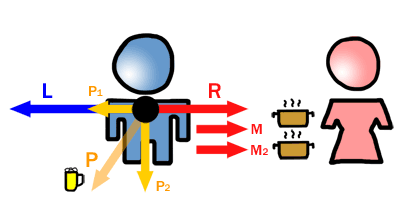
Уверен, мои догадливейшие слушательницы в один голос прокричат, что необходимо добавить силу тянущую мужика вертикально вверх к чему-то возвышенному. Например футбо… театр!
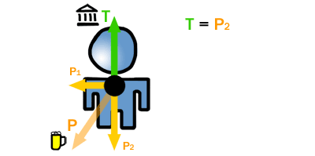
Если сила театра T равняется силе P1, то желаемое равновесие по вертикали достигнуто.
Общая наша картина всех приложенных сил и без раскладывания на вспомогательные силы выглядит следующим образом:
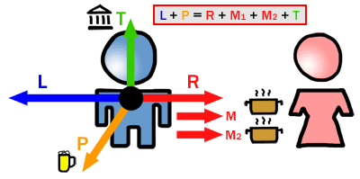
Мужик непоколебим, как чашка горячего кофе на столе!
В рассказанном мною примере вполне раскрывается суть векторного направления сил в теоретической механике. Конечно же, если вы возьмёте в руки учебник для технических вузов, то врядли вы увидите цветные стрелочки и весёлые картинки. Более того, составители учебников — мужчины, конечно же — в качестве примеров берут всякие непонятные силы трения, качения, сопротивления, натяжения… Но тем не менее я очень надеюсь, что с этого момента мои читательницы будут хоть что-то понимать в скучных и серых учебниках, где нет места чувствам и эмоциям.
Попробуйте самостоятельно разобраться, находится ли эта милая розовая девушка в эмоциональном и физическом равновесии:
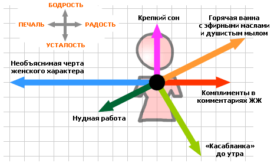
А если и это вам отныне легче лёгкого, то попробуйте вспомнить сегодняшние события и описать состояние самой себя. Желаю вам в ваших ЖЖ постах почаще появляться надписи: Current Mood: состояние равновесия.
Доброго дня!
Зиновий Липинский